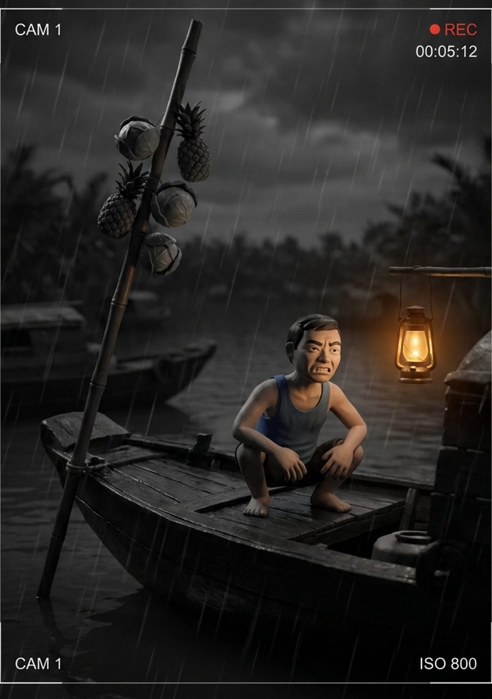

Bản tham chiếu
Ghe bẹo · cây bẹo
Bến sông · biểu cảm “căng”
- ✓Cây bẹo dựng đúng ở mũi ghe — dứa, bắp cải treo trên sào tre.
- ✓Đèn dầu ấm, mưa noir, từ vựng đồng bằng — đúng chuẩn 02.
- ✕Thiếu đôi mắt ghe — mất tín hiệu bản địa mạnh nhất.
- ✕Chữ “CAM 1” nằm trong ảnh — phải là lớp phủ (chuẩn 03).
- ✕Biểu cảm gằn quá — “căng” nên là ghì, nén, không phải nhe răng.
- ✕Áo còn xanh — bỏ theo chuẩn 01.